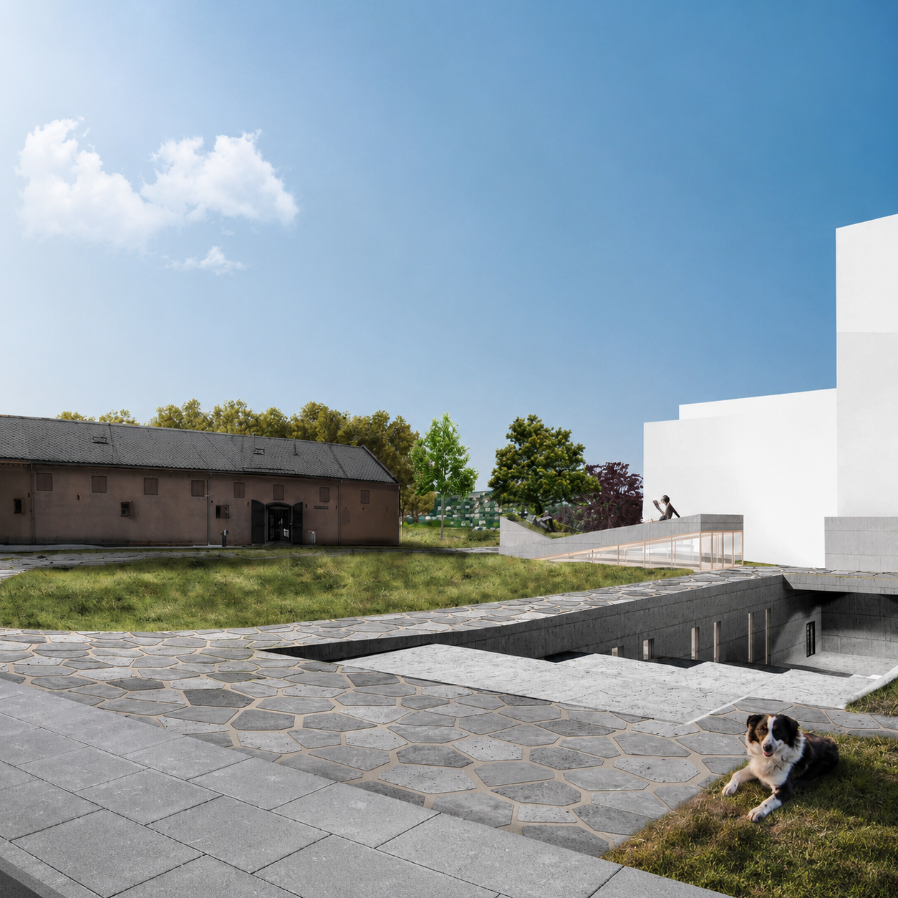

Add your image here'"/>This academic project proposed a new Natural History and Science Center for the NTNU Vitenskapsmuseet campus at Kalvskinnet, Trondheim — a historically rich district envisioned as a cultural and academic hub connecting the university to the city.
The goal was to design an extension that embodies NTNU's Zero Emission Neighbourhood (ZEN) ambitions while respecting the site's cultural heritage and architectural character.
The programme combined new exhibition spaces, laboratories, collection storage, and a 3D cinema, creating a dynamic interface between research and public engagement. The design sought to reinterpret existing structures, integrating them with new interventions to enhance spatial continuity and urban connectivity.
The project emphasises the adaptive reuse of heritage buildings, energy-efficient design, and the creation of accessible public spaces that invite interaction between science, culture, and the community.
The group collaborated on sustainable design strategies at both the urban and building scale, focusing on minimising emissions and improving resource efficiency.
I contributed primarily to the urban and architectural concept development, spatial organisation, diagrammatic studies, and architectural drawings of the Natural History Museum building. The final proposal demonstrates how emission-conscious design can coexist with cultural preservation, offering a forward-looking model for sustainable urban transformation in historically sensitive contexts.